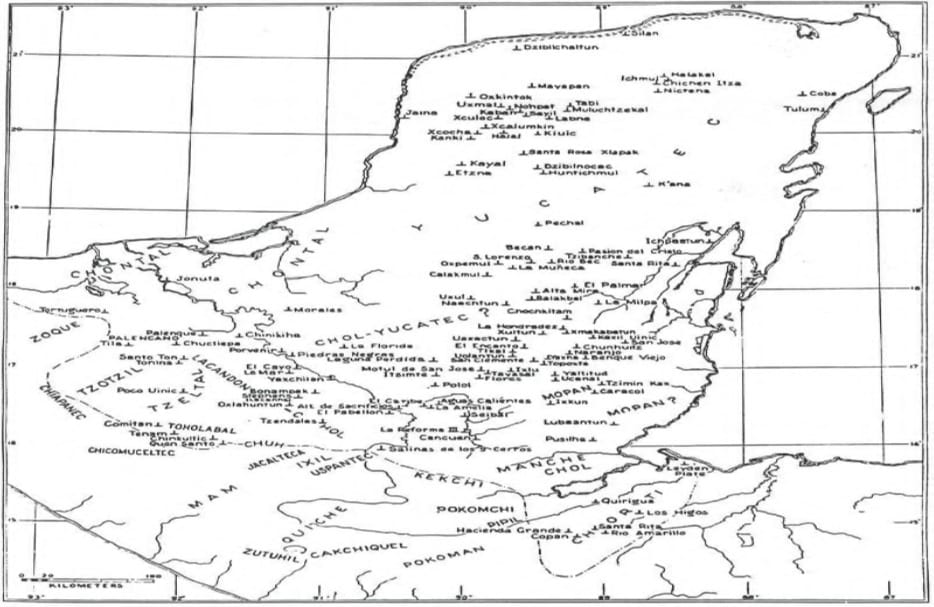
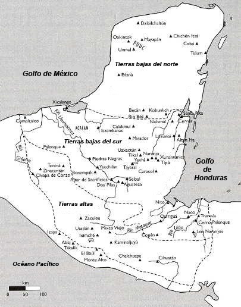
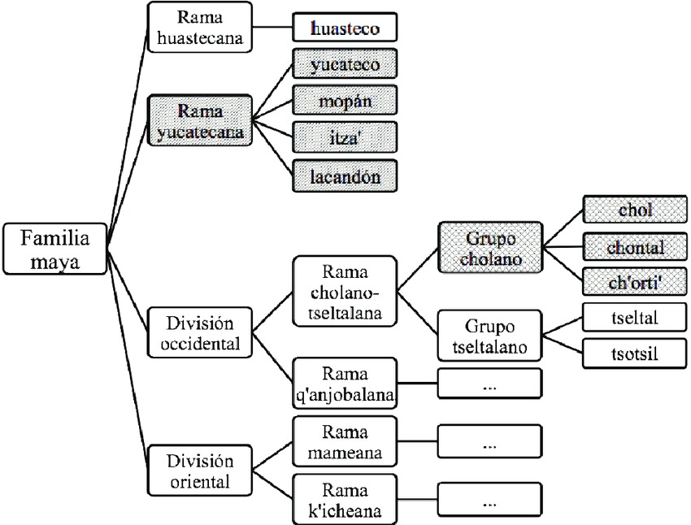
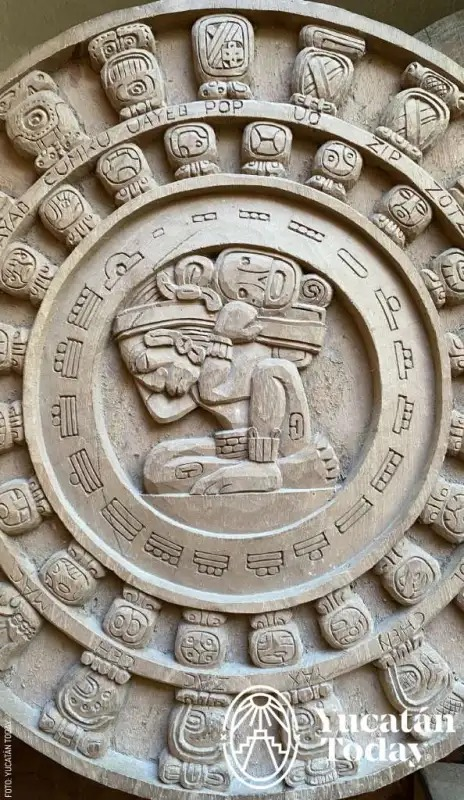
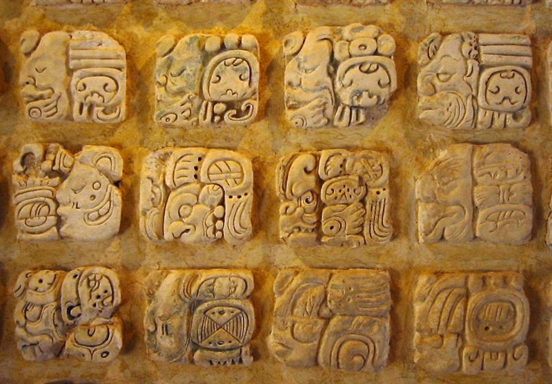

Ityejchiba yik’oty tyi bej ñu’äma laktya’añ CH’ol.
Jiñi ityejchi’ba lakty’añ CH’ol mi ñip yik’oty maya che’bä bajche’ ili ty’añ mi su’beñob ilok’om maya o Nab’ee Maya’Tziij (Thompson, 1938; Morley, 1946; Schumman, 1973). Che’ bajche’ mi yäl jiñi oño’ty’añ, jiñi ilok’om maya tyi tyejchi iyälel tyi ixiñil ijol-ilok’i’k’iñ (noroeste) jiñi Guatemala che’ jiñi tyi bej kaji ipukma ibä tyi ilumal maya ya’ tyi Guatemala, Belice, Honduras yik’oty tyi iyok mulawil(sur) Mexco (Thompson, 1956). Ilibä ty’añ ya’ba’ tyi ñuk-äma che’bä bajche’ lujunp’ej icha’k’al tyi mujch’ ty’añ ty’oxolbä ty’oxolbä tyi chämp’ej: lok’i’k’iñ(oriental), ochi’k’iñ (occidental), yukateca yik’oty huasteka. Jiñi CH’ol tyi tyejchi tyi ty’oxi’bal ochi’k’iñ (occidental) che’ bajche’ tyi yajñib sajty’oxtyäl jiñi cholañ ya’ ixäk’ tyi iyäk’ä ibä jiñi CH’ol. Tyi malil jiñi ixäk’ ya’añ je’el jiñi tzeltañañojob (ya’ ba’añ xtseltalob yik’oty xtsotsilob) yik’oty cholañ (ya’ ba’añ xch’olob, xchoñtalob yik’oty xchortijob) (Josserand, 1975; Thompson, 1938).

I-lumal Ch’ol yik’oty i-xämbal
Li xchumtyälob ta’bä ip’ojlisäyob ibä ya’ tyi lumaläl, tyi ch’ok-ä yambä ajty’añob jiñä ajCh’olanojob, yä’äch tyi käyleyob tyi chumtyäl tyi joktyälel ilum Xmayajob, ya’bä käyleñ tyi iñojpa’lel Grijalva, tyi ityojbil ochi’k’iñ (oeste) motagua. Tyi ityojel pasi’ k’iñ. che’je’el yik’oty xiñtyuk’ulel ilum ajYukatañob, ya’bä käylem tyi sur, junp’ej lum, käñälbä a tsikwentujob yi’k’oty xkäñjuñob tyi ty’añ, ili käñbilbä icha’añob xiñtyuku ujCholana. La tyi tsi’ñtsabä ajñiyib jiñtyo li ajkolembi pañimilob tyi käjyiyob che’ñak tyi wejts’iyob majle li xmayajob de tyi itsiklel 1100 clásico D.C., tyi ochiyob yañob kixtyañojob. Li yambä kixtyañojob ta’bä pojbeñtyiyob ilumal , yik’otyob ajcholob. Tyi tsätsä lojk’iyob cha’añ mi majlelob tyi joktyäle ya’bä käylem tyi lum Usumancita, Grijalba yik’oty tyi Jatate (Gpetz y Morli), 1950; Thompson.

Lakty’añ Ch’ol: baki tyilemo’b jiñi xch’olo’b
Li xchumtyälob ta’bä ip’ojlisäyob ibä ya’ tyi lumaläl, tyi ch’ok-ä yambä ajty’añob jiñä ajCh’olanojob, yä’äch tyi käyleyob tyi chumtyäl tyi joktyälel ilum Xmayajob, ya’bä käyleñ tyi iñojpa’lel Grijalva, tyi ityojbil ochi’k’iñ (oeste) motagua. Tyi ityojel pasi’ k’iñ. che’je’el yik’oty xiñtyuk’ulel ilum ajYukatañob, ya’bä käylem tyi sur, junp’ej lum, käñälbä a tsikwentujob yi’k’oty xkäñjuñob tyi ty’añ, ili käñbilbä icha’añob xiñtyuku ujCholana. La tyi tsi’ñtsabä ajñiyib jiñtyo li ajkolembi pañimilob tyi käjyiyob che’ñak tyi wejts’iyob majle li xmayajob de tyi itsiklel 1100 clásico D.C., tyi ochiyob yañob kixtyañojob. Li yambä kixtyañojob ta’bä pojbeñtyiyob ilumal, yik’otyob ajcholob. Tyi tsätsä lojk’iyob cha’añ mi majlelob tyi joktyäle ya’bä käylem tyi lum Usumancita, Grijalba yik’oty tyi Jatate (Gpetz y Morli), 1950; Thompson.

P’olmälel yik’oty lakty’añ CH’ol
Jiñi troñel ñoj albilbä tyi its’ijbo’ xMayajob jiñ me ik´äñ isubo’ bajche’ me imajlel k’iñ ja’bilel tyak, bajche’ ikuxtyalel wiñik, ñi’iwuty yik’oty bajche’ki yom kuchol yik’oty bajche’ mi ity’uñ majlel ibijletyal. Che’ bajche’ ili me ilok’el tyi utsbä itroñel pejtyel añ isujmlel cha’añ mej ich’ujutyesañ mu’o’bä tyi troñel. Che’ jiñi pejtyel año’bä imajchilo’ me ichajpaño’b. Jiñi p’olmalo’b jaychapo’b. Ili p’olmal me ichoño’ ats’am añbä tyi Chiapas, yik’oty tyi yucatan me ich’ämo’ tyälel chili Tabasco ba’añ chumulo’ jiñi ajch’olo’b yik’oty käkäw, pislel patyälbä tyi tyiñum, pinturajtyak cha’añ ikextyaño’ its’ijbal, yetsel tye’otyak bajche’ pom cha’añ ikuktyälelo’ bi’tyä jawä’tye’ mu’bä yä’beño’ yetse’ tyaj, yetsel tyaj cha’añ buts’iyatyak, puytyak añbä its’ijbal yik’oty ajmajtyañ troñelo’b, (Mendizabal 1946). Cha’añ ili me ik’äño’b bij, ja’ tyi Tabasco me iñumelo’b tyi majli’ k’iñ, yik’oty tyi sur, ya’ tyi ñojpa’ me iñumelo’b ba’ ñojtye’el cha’ añ me ik’otyelo’b ba’ joktyäl tyi chiapas, me iñumelob ya’ tyi Tacotalpa cha’añ me ik’otyelo’b ba’ ñojtye’el tyi chiapas, ya’ iñumelob ya’ tyi Tabasco tyi ñojpa’ ajmäñ p’olmalob ( lee 1978, p. 63). Ba’ yo keñ inumi’ob wa’ tyi ñojpa’lel Tabasco cha’añ ka’bäl ñojpa’ ya’ tyi Tabasco jiñcha’añ ajp’olmalo’b me ipätyo’ ijuku; yik’o’ty yaj kuchijelo; me ich’ämo’b majlel cha’bajk’ läjäñ k’al ip’olmalo; cha’ añ ma’añ me isätyo’b ibijlel ajmäñ p’olmalob me ika cho’pisil tyi tye’o’b ya’ ba’ me iñumelo’ majlel tyi ja’ che’ mi ilok’elob majle tyi Tabasco chili Yucatán, che’bi mi imajlelob me iletsaño’b yik’oty me iju’sañob oromento, cha’añ me ipäso’b ibijlel majlelbä muk’o’b tyi juku’b me ipätyob buts’ tyi pejtyel tyi’ja’ cha’añ i päsob majlel bij.( Diaz,1939).

Tyi ichajp ichajplel bajche’ mi ik’ejlema jiñi ty’añäl
Tyi pejtyelel lak ty'añ, mu'bä ipejkañob antropología yik’oty arqueología mi ipäsob cha’p'ej pensal bajche' mi ik'äñob lakty'añ CH'ol. Junp'ej juñi mi ipensaliñob li lakty'añ CH'ol jiñ muk'bä iweñ k'äñob. Mi ik'äñob tyi resal imi ik'äño' tyi ts'ijb jiñ cha'añ tyi ajli ke weñ k'uxbil yik’oty ch'ujul jiñi lakty'añ CH'ol, de jiñi ty'añ mi ilok'el yambä pensal ke jiñi CH'ol tyi lok'i yambätyak ty'añ cha'añ bajche' mi ik'äñob tyi yambätyak pamil machbä iyujilob jiñi ty'añ CH'ol. Ili pensal añ ipätyäyob itroñel bajche' jiñi xFrancisco Morán (1695) yik’oty x-Alfonso de Escobar jiñi ñaxañbä mi iyäl ke jiñi ty'añ cholti jiñ wajalixbä lak ty'añ CH'ol muk' bä ipejkañob tyi Verapaz (Guatemala) che'ñak tyi k'otyiyob jiñi xkaxlaño'b. Jiñi yambä pensal mi iyäl ke jiñi wajalixbä CH'ol che' yu'bil mi ipejkañtyel bajche' jiñi lacandon. Yambätyak xts'ijbo'b mi iyälob ke li CH'ol tyi yäk'ä imuch'kiño'b ibä bajche' jiñiyo'b cahabonero, lanquiñeros, chesiqueños, chortíes yik’oty toqueguas (loqueguas) jiñiyob toqueguas, xfray Francisco Ximénez mi iyäle' ke che' tyi k'otyiyob jiñi xchumtyälob tyi ityi' ñojpa' ulua mu'bä isu'beñtyelob toqueguas ( loquehuas) mi iyälob ke tyälemob de CH'ol. Añtyak yambä peñsaltyak cha'añ jiñi ajCH'olo'b. Xsheptak (2007) mi ichäkiñ ibä cha'añ ik'a'bisañ jump'ej k'aba' lumal y mi iyäl ke ili ty'añ tyälem tyi ijol ik'aba' ojlilob kixtyañojob chumulo'b bä tyi pam lum tyi Guatemala. Tyi yujtyi'lel ili pensal mi iyälob ke tyälem tyi luxkujk ts'ijb ajkolonealesjob, baki li ty'añ CH'ol tyälemtyak tyi ijol ik'aba' yañtyakbä kixtyañojob weñ k'uxbilo'bä tyi ilumalob. Che' bajche' mi iyäl ili tsa'bä ipätyä ili juñ mi iyäl ke ili ty'añ jiñ ik'aba'ob juñmujch'o'b kixtyañojob weñ uts'atybä chumulo'b imach jiñik jiñi kixtyañojob p'ump'umjaxbä chumulob.

Origen y Evolución de la Lengua Ch'ol
El origen de la lengua ch’ol se vincula al maya a partir de un idioma identificado como protomaya, o Nab’ee Maya’Tziij (Thompson, 1938; Morley, 1946; Schumman, 1973). De acuerdo con las referencias históricas, el protomaya se habló inicialmente en el noroeste de Guatemala para posteriormente extenderse hacia una amplia zona conocida como el área Maya integrado por Guatemala, Belice, Honduras y la parte sur de México (Thompson, 1956). De esta lengua evolucionaron cerca de treinta lenguas más agrupadas en cuatro divisiones: oriental, occidental, yukateka y wuasteka. El ch’ol se originó a partir de la división occidental que dio lugar a la subdivisión del cholán a donde se adscribe la rama ch’ol. Dentro de esta rama se encuentra el tzeltalano (conformados por el grupo tzeltal y tzotzil) y el cholán (donde se ubica el grupo ch’ol, chontal y chortí) (Josserand, 1975; Thompson, 1938).
La Media Luna Cholana y Migraciones
Las poblaciones que dieron lugar a la rama cholana ocuparon las Tierras Bajas Mayas, desde el río Grijalva al oeste hasta el río Motagua al este, incluyendo la mitad sur de la península de Yucatán; una tierra que historiadores y lingüistas reconocen como la media luna cholana. En este espacio se desarrollaron hasta que los centros urbanos fueron abandonados con la caída de los Mayas del Clásico, alrededor del 1100 d. c., dando lugar al dominio de otros grupos. Los grupos vencidos, entre ellos los antiguos ch’oles, fueron obligados a salir hacia las tierras bajas siguiendo los ríos Usumacinta, Grijalva y Jatate (Goetz y Morli, 1950; Thompson 1956).
La Identidad Lingüística Ch'ol
Esta ubicación coincide con la expuesta en la obra de Stoll (1884) quien establece que se desarrollaron como agrupación lingüística y cultural dentro de áreas ubicadas en la media luna cholana y las tierras bajas mayas. Un lugar que se caracterizó por ser multicultural y multiétnico, con un vasto imperio comercial que le permitía entrar en contacto con otros grupos culturales vinculado a otras zonas étnicas como Nicaragua, las tierras altas de Guatemala y el resto de las tierras bajas mayas. Sin duda, un contexto rico en contactos culturales y lingüísticos. Desde esta posición ventajosa, los ch’oles conformaron una nación poderosa con una lengua claramente diferenciada. Entre los vecinos de los ch’oles se encontraban otras naciones hermanas como el chontal, el chortí y el yucateko, entre los cuales ostentaban gran importancia política, económica y cultural. La razón de ser de este prestigio fue su principal actividad económica, el comercio, que le proveía de un alto estatus entre las culturas mesoamericanas.
El Comercio y la Lengua Ch'ol
Era una actividad tan renombrada que en los glifos mayas se representaba el tiempo y el espacio a partir de la figura de un hombre, su carga y el camino. De esta forma se resaltaba el valor de la actividad más allá del mero interés material para concebirse como símbolo divino que honraba a quienes se dedicaban a ella. De allí que muchas familias nobles lo ejercieran. Entre la mercancía que se comerciaba se podía encontrar infinidad de especies y formas. Estas iban desde sal de Chiapas y de Yucatán que se exportaba para Tabasco y las áreas del Chol Manche hasta cacao, ropa de algodón, colores para teñir, tintura para el cuerpo, teas, resma de pino para sahumerios, cuentas coloradas de caracoles y esclavos (Mendizábal, 1946). Para ello se utilizaban rutas interregionales que conectaban el Tabasco central con el Oeste y Sur ya fuera a través de la ruta costera de Tabasco, la Sierra y/o del río Grijalva hacia la depresión central de Chiapas, la ruta Tacotalpa a los altos de Chiapas, y el sistema integral de todas éstas, llamada la ruta Fluvial de Complejo Ribereño de Mercado de Tabasco (Lee 1978, p. 63). Las rutas más comunes fueron las fluviales debido a la hidrología del estado por lo que los comerciantes se hacían de grandes canoas, además de sus tamemes, para transportar hasta mil kilogramos de mercancía. Se colocaban señales en los árboles para acertar el camino de navegación de Tabasco a Yucatán y por tierra existía un código de señales en la cual se subían y bajaban banderas para dar instrucción a quienes navegaban o usaban humaredas colocadas unas tras otras para enviar un mensaje a los navegantes (Díaz, 1939).
Diversas Interpretaciones Lingüísticas
Dentro del rubro lingüístico, los estudios antropológicos y arqueológicos muestran dos tendencias en cuanto al uso del ch’ol. Una de ellas es la consideración del ch’ol como una lengua de alto estatus. Su uso en ceremonias religiosas y en la escritura de estelas permitió que fuera considerada como lengua culta y de prestigio. De esta consideración se desprende una segunda vertiente que sugiere que el ch’ol dio lugar al surgimiento de otras lenguas por su uso constante en otros contextos. Esta hipótesis ha sido difundida en trabajos como el de Francisco Morán (1695) y Alfonso de Escobar. El primero plantea que la lengua cholti constituye una antigua versión del ch’ol hablado en Verapaz (Guatemala) a la llegada de los españoles, mientras que el segundo argumenta que el ch’ol antiguo se relaciona directamente con el lacandón. Otros escritores incluso afirman que el ch’ol ha dado origen a otras agrupaciones como el cahabonero, lanquineros, chesiqueños, chortíes y toqueguas (loqueguas). En el caso de los toqueguas, fray Francisco Ximénez llega a esta conclusión a raíz de la existencia de una población cerca del río Ulúa denominada toqueguas (o loquehuas) quienes se autoadscribían como pertenecientes a la nación Chol. Por otra parte, existen otras teorías en cuanto al ch’ol. Sheptak (2007), por ejemplo, se opone a la consideración de la palabra ch’ol para nombrar a una nación y en su lugar argumenta que esta palabra se relaciona directamente al apellido o linaje de ciertos personajes de las tierras altas de Guatemala. Esta conclusión se desprende del análisis que hace de algunos manuscritos coloniales donde la palabra ch’ol aparece junto a otros apellidos de importancia. Así, el autor señala que el vocablo apunta más a un rango social que a una identidad lingüística.